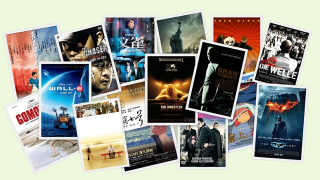

抽空看了看豆瓣里我们标记的去年看过的电影，粗略估计不下100部了，对着单子回想自己什么时候看的这些电影，连带着能想起自己那段时光都做了些什么，仿佛又把去年的经历回忆了一遍。这和我们写博客的意图一样，若能坚持多年，以后再回看每段时光，也许自己也会觉得多不容易啊。08年还是有很多值得称道的好电影，选了印象最深的几部推荐一下。
WALL-E 2008佳片无数，但真要说哪部电影能够渗透进我们的生活，那还是非WALL-E莫属。回想当初看预告片时，第一次看到脏兮兮的WALL-E形象，很难将它跟可爱联系起来，也更难想象半年后我们会把WALL-E买回来摆在身边，时不时拿个遥控器玩它，反反复复听他含糊不清的叫自己名字而不觉得厌倦。这就是WALL-E的魔力，皮克斯的魔力，影片中关于WALL-E的每一个微小细节，都透露着皮克斯对于角色的细腻把握，而这也是中国动画最缺乏的。皮克斯在WALL-E的番外篇BURN-E中同样展示了它作为动画大牛的水准。
黑暗骑士 如果没有WALL-E，黑暗骑士当之无愧会成为今年的年度最佳。我不是美式漫画翻拍电影的死忠，之前对蝙蝠侠系列电影也不太感冒，但这部电影，彻底改变了我对于此类电影的看法。这是一部能让你看得血脉喷张，同时又唏嘘不已的电影。而希斯莱杰的逝去，则加剧了这部电影的黑暗悲情意味，让这部前传真正成为了永恒的绝唱。期待奥斯卡为希斯莱杰颁发最佳男配奖。看完这样的电影，你会觉得所谓主流大片，就该如此，每一个镜头，每一场戏，每一句台词，都是精心设计，难怪有好多影迷会执迷于专研其中的每一处细节。
摔角王 临近年末，突然又钻出来不少好片。也难怪，都是冲着奥斯卡去的。摔角王，一个一点也没有吸引力的名字，至少对于我是这样。于是被拉着陪小树一起看。结果是大出所料，感动到流泪，一遍遍听片尾曲，感受那个中年老男人的孤独和落寞。有个小细节是兰迪去签名出售比赛光盘，看见几个昔日的摔角界明星也在旁边签售，那几个人不是坐着轮椅就是打着绷带，专程前来就是为了挣那么几个钱，个中的心酸只有这些摔角手们自己知道。兰迪的扮演者，曾经的帅哥米基·洛克，凭借这部电影重出江湖，更是一举拿下金球奖最佳男主角。希望今年的奥斯卡能再拿一个最佳。不过下面这部电影会是最有力的竞争者。
老爷车 传言这是老头子克林特·伊斯特伍德的收山之作。结果看完之后又听说老头子宣布要跟斯皮尔伯格拍新片。也罢，毕竟老头子还不到80岁，是还可以继续拍下去嘛。如果说上一部电影是中年老男人的故事，这一部就是老年老男人的故事了。短时间内看了两部老男人题材的片子，还都很不错。除了同样有上一部的孤独和落寞，许多地方还穿插着幽默的小桥段，最后则是以悲壮，有些让人一时难以理解的悲壮而结束。这样一个老头，一个看上去孤僻，守旧，没有宗教信仰，不可理喻，和周围的人甚至儿孙们格格不入的老头，会以自我殉葬的方式去完成对于朋友的淳淳关爱。老头子克林特的表演和讲故事的方式，将这样一个故事表达地极其自然，含蓄，却又让人看完后难过得要死。不得不说，姜还是老的辣。
功夫熊猫 每次梦工厂出来一个中国元素的动画巨制，总是会引发国内动画界一场巨震。但从花木兰到功夫熊猫，多年过去，我们的动画片还是无法望其项背。从改编的功夫片头到片中的中国音乐，每一个元素都有着浓浓的中国味道。说明别人拍动画片，不只是外在做得可爱了就行，而是从角色内在开始分析，从每一个细节去处理。这才是中外动画的最大差异。看功夫熊猫是很开心的事，看完还不过瘾，可以玩玩功夫熊猫的游戏，还扩展了电影里的好多情节，交待了许多背景故事。
苜蓿地 Cloverfield之所以上榜，是因为它开创了一种新的电影模式。不是转得人头晕的镜头，那个在《女巫布莱尔》里早就用过了。而是互联网时代，影片和网络结合，电影里和电影外结合，编剧和观众互动的模式。很佩服J.J Abrams爱玩，敢玩，能玩的本性。这也是我为什么一直追着要看Lost的原因。其实电影或电视这会儿已经超越了其本身的范畴，它变成了一场游戏，一场可以和若干影迷一起参与的游戏，当然这样的游戏只适合那些爱玩解密游戏的超级饭丝，所以也难怪，还是有很多人会觉得Lost无聊，觉得Cloverfield没劲。不过，我正好是吃这套的人。
天水围的日与夜 终于轮到中文电影，特别要谈谈这一部。非常平淡的电影，如果去掉当中几处情感爆发戏，我会觉得更完美。这一部电影可以让我静下来，重新审视一下自己的生活。有人天天鱼翅捞饭，有人天天菜圃炒蛋，别人的富裕是别人的，和自己无关，我只求在一个温暖的地方，温暖的活着，有爱我的人和我爱的人，能够做自己想做的事，这就够了。当整个世界都在疯狂追求成功，追求利益，我们只想停下来，不说话，依偎在一起，听听音乐，看看电影，晒晒太阳。
文雀 很遗憾，如果你看的是国语版的文雀，我可以理解你把它当成烂片。万恶的广电总急，阉割篡改了所剩不多可引进电影的最后精华，最终的结果就是，我们现在很少再去电影院看电影了。其实这部片，小树作为一个有香港情节的人，比我更有发言权。不过我也很是喜爱这样一部色香味俱全的电影。一直很喜欢杜琪峰的风格，他的风格似乎在法国也挺吃香，所以才有了这回法国人的配乐。影片中的每一条街道，每一处小店，每一小段音乐都很有韵味。看这样一部电影，像是在读一首若即若离的诗，你会觉得周围的空气也精致起来。看完后你会不自觉的哼着里面的一段音乐，学着他们的步伐，轻盈地穿过大街小巷。
以上就是2008我们最爱的八部电影。其实今年还有很多好片，像《海角7号》，《贫民窟的百万富翁》，《悬崖上的金鱼姬》，《追击者》，《格莫拉》，《浪潮》，《杀手没有假期》，《人生访客》等等都不错。期待2009的好电影，期待我们2009年的生活！